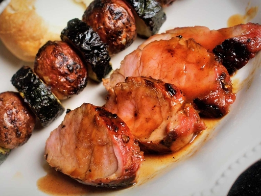

Marinated Grilled Pork Tenderloin

Description
Yearning for some amazing grilled meat? This tasty marinated pork tenderloin cooks up nicely on the grill and will give you just the right amount of nutrients for an incredible meal.
This meal tastes best when marinated for about 24 hours to bring out all of its flavours.
Ingredients
- 1/4 cup honey
- 1/4 cup soy sauce
- 1/4 cup oyster sauce
- 2 tablespoons brown sugar
- 4 teaspoons minced fresh ginger root
- 1 tablespoon ketchup
- 1 tablespoon minced garlic
- 1 tablespoon chopped fresh parsley
- 1/4 teaspoon onion powder
- 1/4 teaspoon cayenne pepper
- 1/4 teaspoon ground cinnamon
- 2 (12 ounce) pork tenderloins
Steps
- Make marinade: Whisk together honey, soy sauce, oyster sauce, brown sugar, ginger, ketchup, garlic, parsley,
onion powder, cayenne pepper, and cinnamon in a medium bowl; pour into a resealable plastic bag
- Place pork tenderloins into the bag; coat with marinade, squeeze out excess air, and seal the bag. Marinate
in the refrigerator for at least 1 hour or up to 24 hours.
- Preheat the grill for medium heat and lightly oil the grate.
- Remove pork tenderloins from the marinade; shake off excess. Discard remaining marinade.
- Cook pork tenderloins on the preheated grill until no longer pink in the center, 20 to 30 minutes, turning occasionally.
An instant-read thermometer inserted into the center should read at least 145 degrees F (63 degrees C)